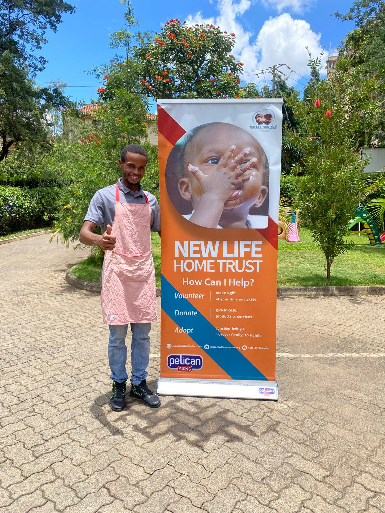
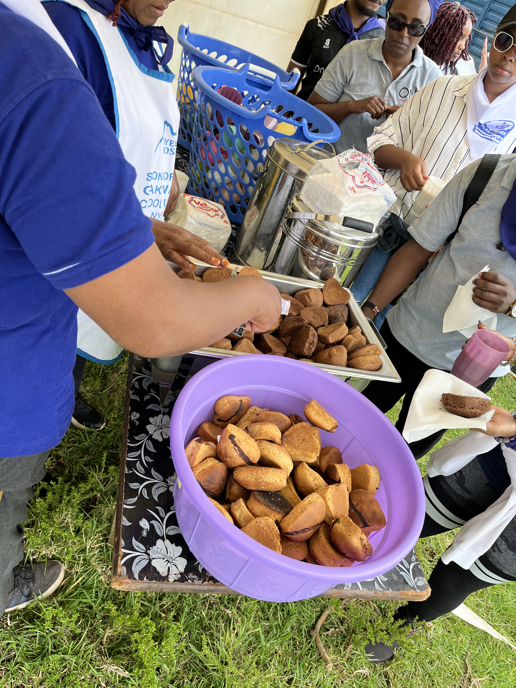
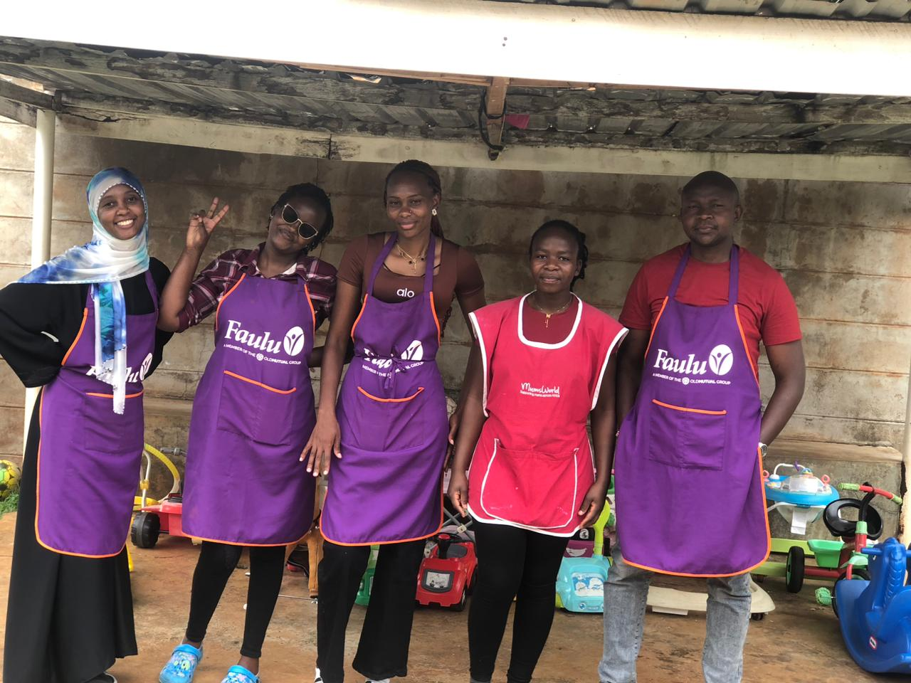
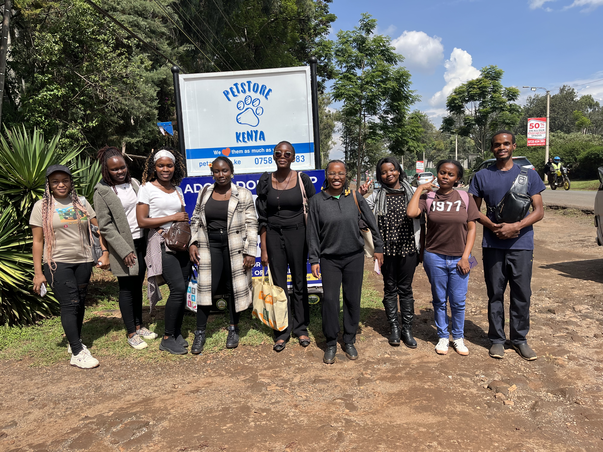

Children's Homes
Share your time through supervised play, reading, creative activities, companionship and practical support where requested by the home.
Find meaningful ways to give your time, lend a hand and bring a little more kindness to communities and animals across Kenya.

Sometimes, all it takes is a willing heart and a few hours to make someone's day brighter. Volunteer Gigs helps people discover opportunities to support organisations doing important work.
Whether you enjoy spending time with children, supporting hospice communities or caring for animals, there may be a place where your time and kindness can help.
Explore different areas where volunteers may be able to offer their time and support. Specific visits depend on each organisation's needs and permission.

Share your time through supervised play, reading, creative activities, companionship and practical support where requested by the home.

Offer companionship and practical non-clinical support. Any patient-facing activity must be approved and guided by the hospice team.
Help with approved activities such as walking dogs, socialising cats, cleaning, feeding assistance and sharing animal welfare awareness.
You don't need to have everything figured out. Start by joining the community and finding an opportunity that suits you.
Join our WhatsApp or Telegram community to hear about volunteering opportunities.
Explore opportunities and choose an organisation or activity that interests you.
Check the organisation's requirements, availability, permission and visit arrangements before going.
Bring a willing attitude, follow the organisation's guidance and make your time count.
Volunteering isn't always about grand gestures. It can be a conversation, a helping hand, a shared laugh or simply showing up.



Have a volunteering moment or story to share? We'd love to celebrate the kindness happening in our community.
Some organisations may also welcome useful items or other forms of support. Check with the organisation first to confirm what is needed and how donations should be delivered.
Join the Volunteer Gigs community and connect with people who want to make a positive difference. Reach out if you have a question or would like to share an opportunity.